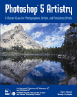

Next: 10. GIMP Resources
Up: Grokking the GIMP
Previous: 9.7 Which Format GIF
-
- 1
- Eric S. Raymond, The New Hacker's Dictionary,
Edition, MIT Press, 1996.
- 2
- Karin and Olof S. Kylander, The GIMP User Manual,
http://manual.gimp.org.
- 3
- Olof Kylander and Karin Kylander, GIMP: The Official Handbook, The Coriolis Group, 1999.
- 4
- Charles A. Poynton, Frequently Asked Questions
about Color,
http://www.inforamp.net/~poynton/ColorFAQ.html
- 5
- William K. Pratt, Digital Image Processing, John
Wiley & Sons, New York, 1991.
- 6
- Dan Margulis, Professional Photoshop 5: The
Classic Guide to Color Correction , John Wiley & Sons, 1998.
- 7
- Ansel Adams, Robert Baker (Contributor), The Negative (Ansel Adams Photography, Book 2), Little Brown & Co, Reprint 1995, ISBN: 0821221868.
- 8
- Ansel Adams, Robert Baker (Contributor), The Print (Ansel Adams Photography, Book 3), Little Brown & Co, Reprint 1995, ISBN: 0821221876.
- 9
- Gregory Cosmo Haun Photoshop Collage Techniques, Hayden Books, Indianapolis, Indiana, 1997.

- 10
- Barry Haynes and Wendy Crumpler Photoshop 4
Artistry, New Riders Publishing, Indianapolis, Indiana, 1997.

- 11
- David Lai and Greg Simsic, Photoshop 4 Type Magic,
Hayden Books, 1997.
- 12
- Lynda Weinman and Bruce Heavin and Ali Karp, Coloring Web Graphics, New Riders Publishing, 1996.
Next: 10. GIMP Resources
Up: Grokking the GIMP
Previous: 9.7 Which Format GIF
©2000 Gimp-Savvy.com